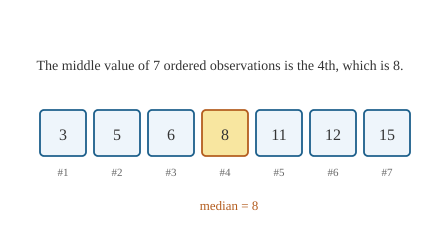
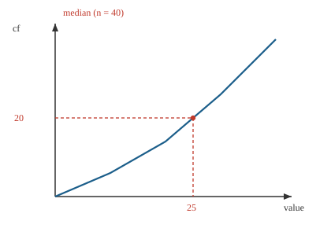

<script>if(location.hostname.endsWith('onrender.com'))location.replace('https://math-sandbox.pages.dev'+location.pathname+location.search+location.hash)</script>
<section class="theory" data-section="S1-2.3">
<h2>2.3 The median</h2>
<p class="src">Based on Cambridge International AS &amp; A Level Mathematics: Probability &amp; Statistics 1 Coursebook, Chapter 2, printed pp.42–50 (the median of a list, of an even number of observations, and from a cumulative frequency graph). Printed pages were read from S1.pdf (printed 42–50 = PDF 54–62). Own wording and new numbers.</p>
<p class="key-words"><strong>Key words:</strong> <em>median of a data set</em></p>
<p>The <strong>median of a data set</strong> is the middle value when the observations are arranged in order. For an odd number of observations, say \(2k+1\), the median is the \((k+1)\)th value. For an even number of observations the median is the mid-point of the two middle values.</p>
<figure>

<figcaption>The seven ordered values 3, 5, 6, 8, 11, 12 and 15 have median 8, which is the 4th value because \((7+1)/2=4\).</figcaption>
</figure>
<p>When the data are grouped, the median of a data set is estimated from a cumulative frequency graph by reading the value at half the total frequency (or, equivalently, at cumulative frequency \(n/2\)).</p>
<figure>

<figcaption>With 40 observations the median is read at cumulative frequency 20. On this graph that height meets the curve at 25, which can also be obtained by interpolation: \(20+10\times(20-14)/12=25\).</figcaption>
</figure>
<table class="plain">
<thead><tr><th>Value</th><th>Frequency</th></tr></thead>
<tbody>
<tr><td>3</td><td>1</td></tr>
<tr><td>5</td><td>1</td></tr>
<tr><td>6</td><td>1</td></tr>
<tr><td>8</td><td>1</td></tr>
<tr><td>11</td><td>1</td></tr>
<tr><td>12</td><td>1</td></tr>
<tr><td>15</td><td>1</td></tr>
</tbody>
</table>
<div class="worked-example">
<h4>Worked example 1</h4>
<p class="src">Book: an ordered list on printed pp.42–44. New numbers.</p>
<p>Find the median of the data set 3, 5, 6, 8, 11, 12, 15.</p>
<ol class="steps">
<li>There are 7 values, so the median is the 4th value, which is 8. <span class="mark">A1</span></li>
</ol>
<p class="final"><strong>Answer:</strong> 8</p>
</div>
<div class="worked-example">
<h4>Worked example 2</h4>
<p class="src">Book: an even number of observations, printed pp.44–45. New numbers.</p>
<p>A data set has 8 values arranged in order. The 4th value is 10 and the 5th value is 16. Find the median.</p>
<ol class="steps">
<li>The median is the mid-point of the two middle values: \((10+16)/2=13\). <span class="mark">A1</span></li>
</ol>
<p class="final"><strong>Answer:</strong> 13</p>
</div>
<div class="worked-example">
<h4>Worked example 3</h4>
<p class="src">Book: reading a cumulative frequency graph, printed pp.46–50. New numbers, independently interpolated.</p>
<p>A cumulative frequency graph for 40 observations passes through the points \((20, 14)\) and \((30, 26)\). Estimate the median.</p>
<ol class="steps">
<li>Read at cumulative frequency 20. In the class from 20 to 30 the graph rises from 14 to 26, so the median is \(20+10\times(20-14)/12=25\). <span class="mark">A1</span></li>
</ol>
<p class="final"><strong>Answer:</strong> 25</p>
</div>
<h3>Past paper</h3>
<p>No genuine official past-paper item that is only about the median of a data set was found in the available 9709 Paper 6 QP+MS corpus, including later series, variants and years still in scope. Official items that mention the median almost always combine it with the interquartile range, a cumulative frequency graph that must also be drawn, or the median of a probability distribution (not a data set). Combined mark allocations were not split. This is an honest gap.</p>
<h3>Common mistakes</h3>
<ul>
<li>Forgetting to arrange the observations in order before picking the middle value.</li>
<li>Taking the 4th value alone as the median when there are 8 observations, instead of averaging the 4th and the 5th.</li>
<li>Reading a cumulative frequency graph at \(n\) or at \(n+1\), rather than at \(n/2\).</li>
</ul>
<h3>Quick checks</h3>
<div class="quick-check" data-q="QC1">
<h4>Quick check 1</h4>
<p>A data set has 9 values arranged in order. The median is the \(m\)th value. What is the value of \(m\)?</p>
<details><summary>Worked solution</summary>
<ol class="steps">
<li>There are 9 values, so the median is in position \((9+1)/2=5\). <span class="mark">A1</span></li>
</ol>
<p class="final"><strong>Answer:</strong> \(5\)</p>
</details>
</div><div class="quick-check" data-q="QC2">
<h4>Quick check 2</h4>
<p>A data set has 8 values arranged in order. The 4th value is 10 and the 5th value is 16. What is the median?</p>
<details><summary>Worked solution</summary>
<ol class="steps">
<li>With an even number of values the median is the mid-point of the two middle values: \((10+16)/2=13\). <span class="mark">A1</span></li>
</ol>
<p class="final"><strong>Answer:</strong> \(13\)</p>
</details>
</div><div class="quick-check" data-q="QC3">
<h4>Quick check 3</h4>
<p>A cumulative frequency graph illustrates 40 observations. The median is read from the graph at a cumulative frequency of \(k\). What is the value of \(k\)?</p>
<details><summary>Worked solution</summary>
<ol class="steps">
<li>The median is read at half of 40, so \(k=20\). <span class="mark">A1</span></li>
</ol>
<p class="final"><strong>Answer:</strong> \(20\)</p>
</details>
</div>
</section>
